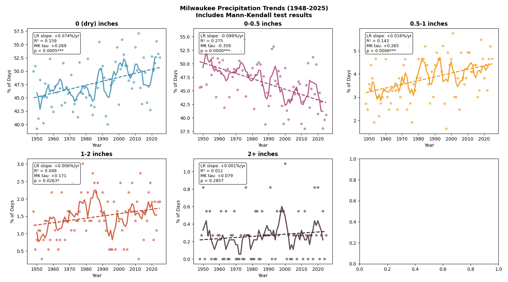

Wisconsin's rainfall is changing in a way that matters for infrastructure, agriculture, and flood planning. It's not just getting wetter overall — the type of rain is changing. Drizzly, misty days are becoming rarer, while moderate and heavy downpours are becoming more common. Cities along Lake Michigan like Milwaukee and Green Bay are experiencing this shift at more than twice the rate of inland cities like Wausau and Eau Claire.
How is Wisconsin's daily rainfall changing over time?
This project focuses on one central question: is the character of precipitation in Wisconsin shifting — not just how much rain falls each year, but what kind? Using daily weather records from the state's six major airport weather stations, going back to around 1948, the analysis tracks whether light rain events are becoming rarer while moderate and heavy events grow more frequent.
The six stations — Milwaukee, Green Bay, Madison, La Crosse, Wausau, and Eau Claire — were chosen because they maintain the longest and most consistent records in the state, following federal observing standards with minimal gaps. Their geographic spread also makes it possible to compare how trends differ between lakeshore and inland locations.
About 80 years of daily rain records across Wisconsin
Daily precipitation data came from six Wisconsin airport weather stations — Milwaukee, Madison, Green Bay, La Crosse, Wausau, and Eau Claire — which have kept consistent records since around 1948. Airport stations are used because they follow strict federal standards and have the fewest gaps.
Every day in the record was placed into one of five buckets based on how much rain fell: none, light (under half an inch), moderate (half to one inch), heavy (one to two inches), or extreme (over two inches). I then calculated whether each category was becoming more or less frequent over the decades.
To make sure the trends were real and not just noise, I used two independent statistical tests — one that fits a straight line through the data and one that doesn't assume any particular shape. When both tests agree, the trend is on solid ground. They agreed on every major finding reported here.
Milwaukee precipitation trends, 1948–2025
The chart below shows Milwaukee — the station with the longest record — broken into all five rain categories. Each panel covers 1948 to 2025. The dashed line is the long-term trend; the solid line smooths out year-to-year noise. The numbers in each box show how fast the trend is moving and how statistically confident we are in it.

Each panel shows the percentage of days per year in that rain category. The dashed trend line and the statistics box (slope, R², p-value) in each panel confirm the direction and strength of the change. Note that dry days and light rain trend in the opposite direction from moderate and heavy rain — the clearest sign of redistribution.
Six stations, two geographic profiles
Running the same analysis at all six stations revealed that Milwaukee's pattern isn't unique — but the strength of the effect depends on where you are. The most striking result: the growth in moderate rainfall is roughly twice as fast at stations near Lake Michigan as at stations further inland.
| Station | Location | Dry (0") | Light (0–0.5") | Moderate (0.5–1") | Heavy (1–2") | Extreme (2+") |
|---|---|---|---|---|---|---|
| Milwaukee Lakeside | MKE | +0.074*** | −0.098*** | +0.016*** | +0.006* | NS |
| Green Bay Lakeside | GRB | +0.076*** | −0.096*** | +0.011* | +0.010** | NS |
| Madison Inland | MSN | +0.039 NS | −0.060** | +0.009 NS | +0.007* | * |
| Wausau Inland | AUW | +0.072*** | −0.084*** | +0.006 NS | +0.003 NS | NS |
| Eau Claire Inland | EAU | +0.122*** | −0.133*** | +0.003 NS | +0.008* | NS |
| La Crosse | LSE | +0.006 NS | −0.033 NS | +0.010 NS | +0.016*** | NS |
Numbers show how fast each category is changing (%/year). Stars indicate statistical confidence: * reasonably confident, ** very confident, *** extremely confident. NS = no clear trend detected.
Great Lakes proximity amplifies the redistribution
The most geographically interesting finding is the difference between lakeside and inland stations in the moderate precipitation category (0.5–1"). Milwaukee and Green Bay — both on or near Lake Michigan — show significant upward trends in this category at rates roughly 2–2.5× those of Wausau and Eau Claire inland.
Milwaukee (+0.016%/yr) and Green Bay (+0.011%/yr) both show statistically significant increases in moderate rain. Wausau (+0.006%/yr) and Eau Claire (+0.003%/yr) show no significant trend at all. The Lake Michigan shoreline appears to be amplifying this shift — consistent with how lake breezes can recirculate moisture and concentrate rainfall near the water — though this specific pattern in Wisconsin hasn't been well documented before.
La Crosse stands apart from the other five stations. Its strongest trend is in heavy rainfall (over an inch), not moderate. This may reflect its location in the Mississippi River valley, which has its own weather dynamics separate from the Great Lakes.
The light rain decline is almost entirely trace events
The 0–0.5" light rain category is declining strongly at most stations, but a closer look at Milwaukee reveals something more specific: the decline is not spread evenly across the category. It is driven almost entirely by trace precipitation events — readings of 0.01" or less, the kind of fine mist or drizzle that barely registers on a gauge. At Milwaukee, trace events account for a total change of −6.6% over the study period, a result that is statistically highly significant. Ordinary light rain events (above 0.01") show little to no significant trend.
So the story isn't that rainstorms are disappearing — it's that misty, barely-there drizzle days are becoming rarer. Whether this pattern holds at the other five stations is one of the next things to investigate.
What the data shows
- Wisconsin rain is changing shape, not just amount. There are more dry days, fewer drizzly days, and more moderate and heavy downpours — a clear shift in the character of precipitation over the past 80 years.
- It's also getting wetter overall. Total annual rainfall has increased — so this isn't just redistribution, it's redistribution plus more rain in total.
- Lake Michigan amplifies the effect. The growth in moderate rainfall is roughly twice as fast near the lakeshore (Milwaukee, Green Bay) as it is inland (Wausau, Eau Claire), where the trend is too weak to be statistically reliable.
- The "less light rain" story is really about mist disappearing. At Milwaukee, the decline in light precipitation is almost entirely coming from trace events — drizzle and mist that barely registers. Light rain proper is holding steady.
- La Crosse is different. Its biggest shift is toward heavy rain (over an inch), not moderate rain — possibly because it sits in the Mississippi River valley rather than near the Great Lakes.